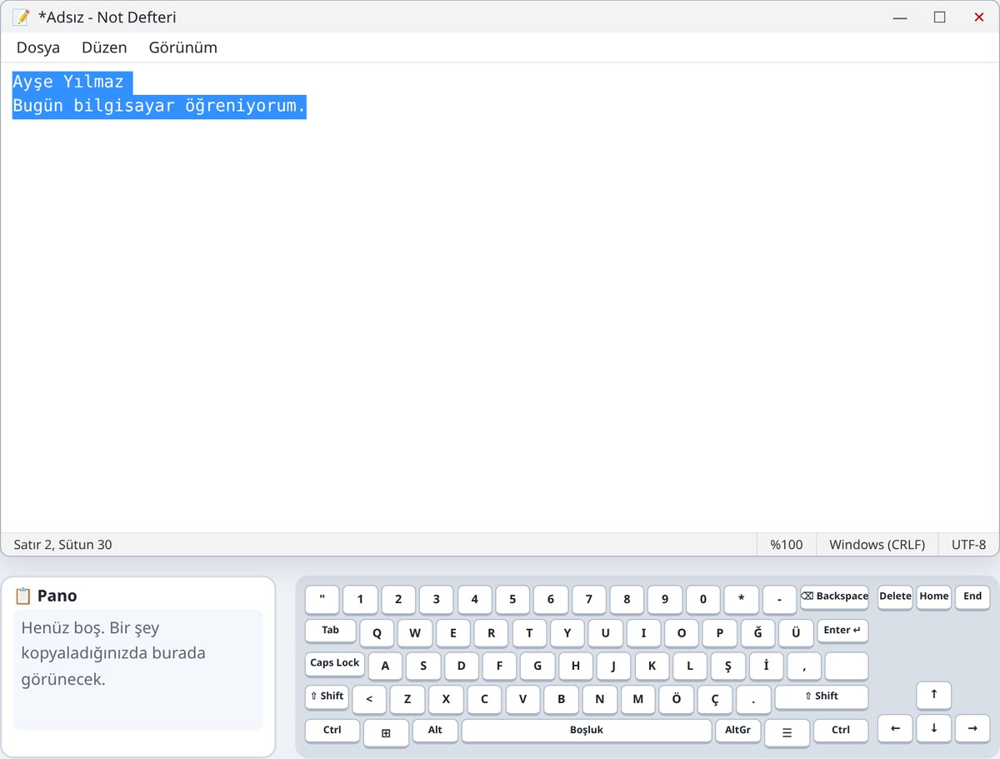
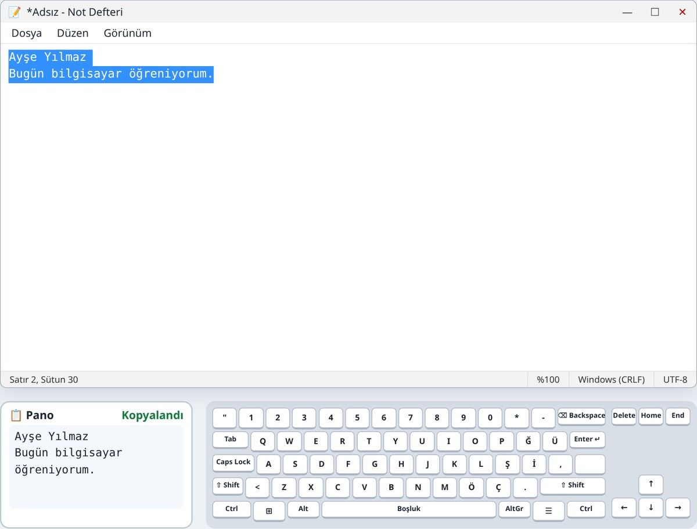
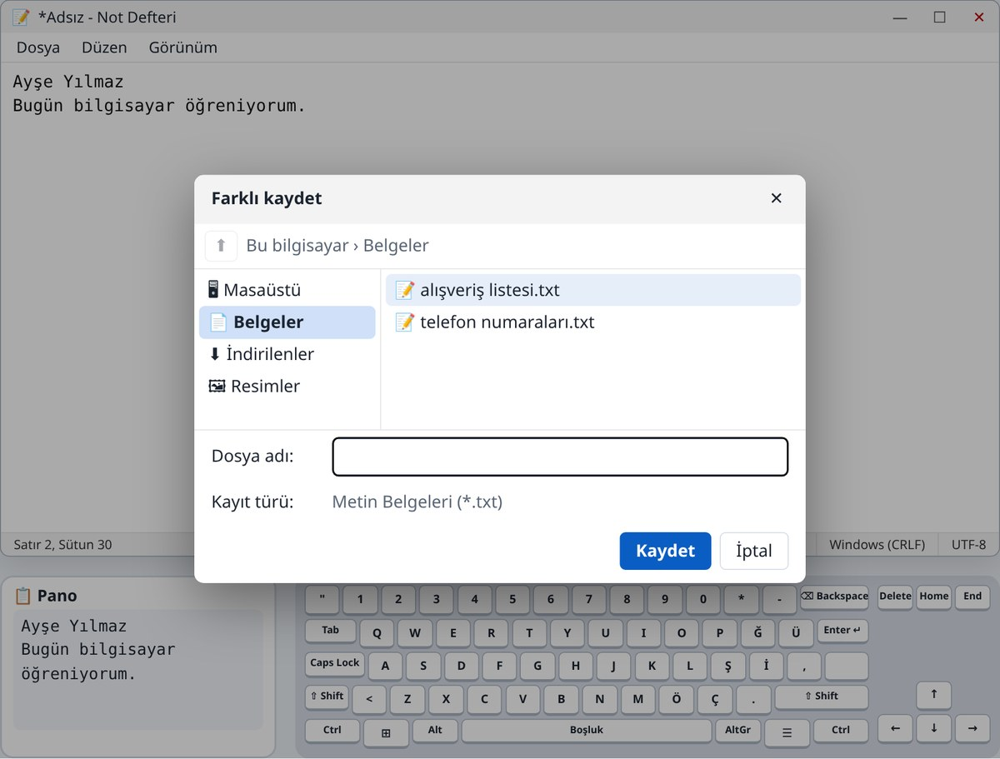

3. Hafta: Not Defteri ve kısayollar
Alıştırmalar ve oyunlar
Bu hafta
| 1 | ⊞ Windows tuşuna basın |
|---|---|
| 2 | not defteri yazın |
| 3 | Enter tuşuna basın |
Alıştırma 1
Seçiliyken bir harfe basarsanız yazının yerine o harf yazılır. Olursa Ctrl+Z ile geri alın.

Alıştırma 2
Pano’daki yazı, siz yeni bir şey kopyalayana kadar orada kalır.

Alıştırma 3
| Ctrl + Z | Geri al. Son yaptığınız iş silinir. Bilgisayardaki “can simidi”. |
|---|---|
| Ctrl + Y | Yinele. Geri aldığınızı geri getirir. |
| Ctrl + X | Kes. Yazı yerinden alınır, Pano’ya gider. Sonra Ctrl+V ile başka yere yapıştırılır. |
Kopyala: yazı yerinde kalır, bir kopyası gider. Kes: yazı yerinden alınıp götürülür.
Alıştırma 4
Alıştırma 5
Kaydedilen dosyalar, bilgisayarı kapatsanız da kaybolmaz.

Özet
| Çift tıklama | Bir kelimeyi seç |
|---|---|
| Ctrl + A | Hepsini seç |
| Ctrl + C | Kopyala (yazı yerinde kalır) |
| Ctrl + X | Kes (yazı yerinden alınır) |
| Ctrl + V | Yapıştır |
| Ctrl + Z | Geri al |
| Ctrl + Y | Yinele |
| Ctrl + S | Kaydet |
| Ctrl + O | Aç |
| Sağ tık | Kes, Kopyala, Yapıştır menüsü |